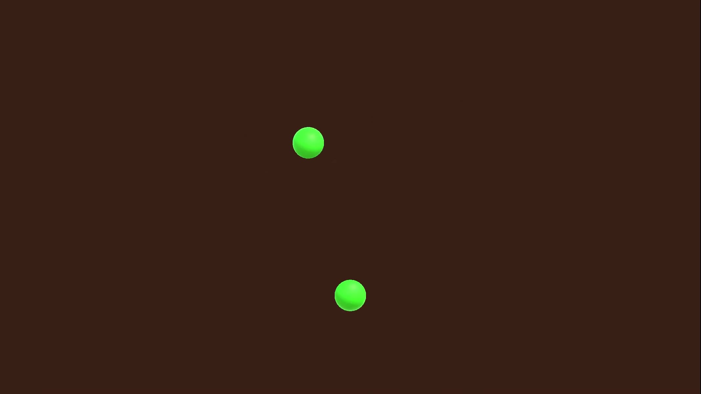

Experience
The player reacts to fruit moving through the play area and directs a slicing action across it.

Description
The moving targets provide a short window in which to act. The player must read their path and place the slicing movement where it will intersect the fruit.
The resulting cut provides the immediate feedback. In versions that include physical halves, the separated pieces make the collision and the direction of the slice visible after the action.

Detailed features
Moving fruit targets
Targets provide a readable goal for interaction. Their position establishes the aiming challenge, while their response shows whether the action succeeded.
Slicing interaction
The play field changes quickly, so the player must identify an active target and respond in time. A successful interaction produces immediate visual feedback.
Immediate visual feedback
This part of the project contributes to the core interaction described above. Its role is presented through the project’s available interface, source, and visual preview.
Build summary
The project is presented with Unity. Its implementation connects the input or controls, the project’s changing state, and the rendered interface. The Source action opens the saved code or build material for this entry.
- Technology
- Unity
- Scope
- Unity project
- Presentation
- 1080p or higher
Feature video
Actual project footage · 2134 × 1200 · No narration